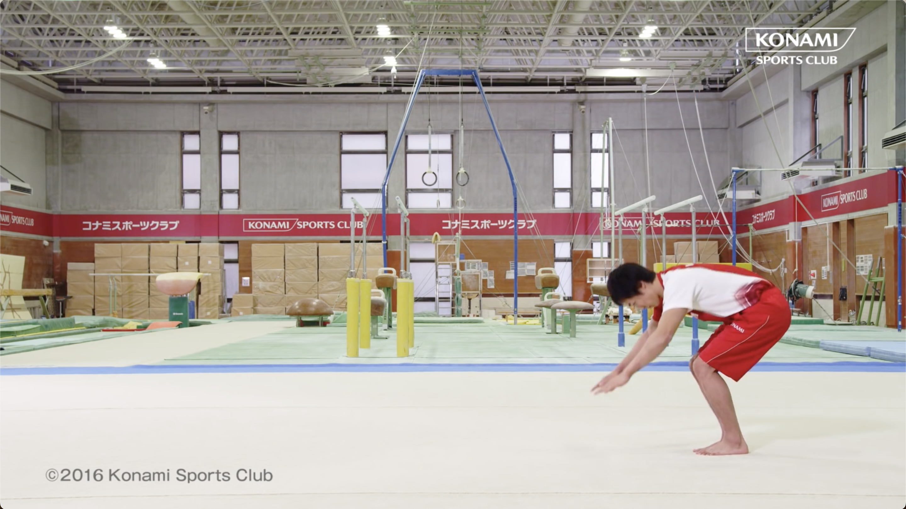
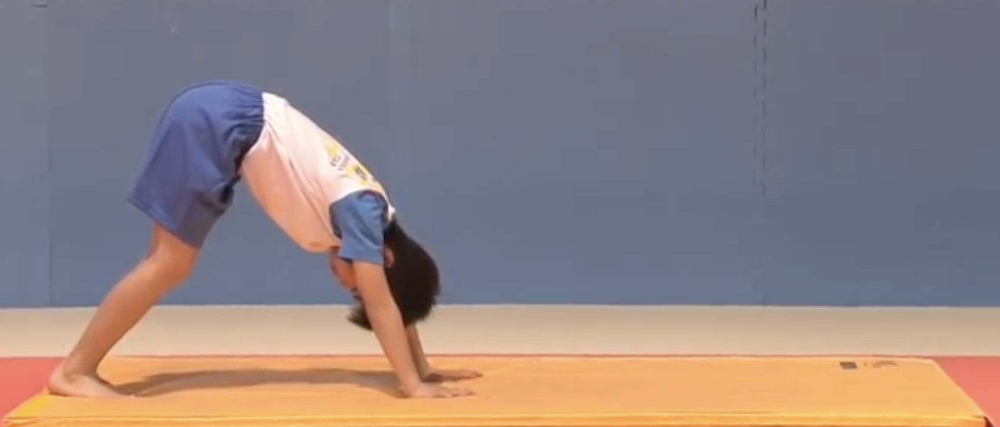

改善点
改善点1


このフレームでは、姿勢が安定していません。生徒さんはもう少し背筋を伸ばすように心がけましょう。
改善点2
手の位置が不安定です。教師のように手をしっかり支えて行うと良いでしょう。
改善点3
目線が安定していません。前転中も目線を一点に定めるようにしましょう。
改善点4
足の開きが大きいです。足をもう少し閉じて安定感を増すように心がけましょう。
小学生低学年の前転を改善するツール - 結果
このフレームでは、姿勢が安定していません。生徒さんはもう少し背筋を伸ばすように心がけましょう。
手の位置が不安定です。教師のように手をしっかり支えて行うと良いでしょう。
目線が安定していません。前転中も目線を一点に定めるようにしましょう。
足の開きが大きいです。足をもう少し閉じて安定感を増すように心がけましょう。